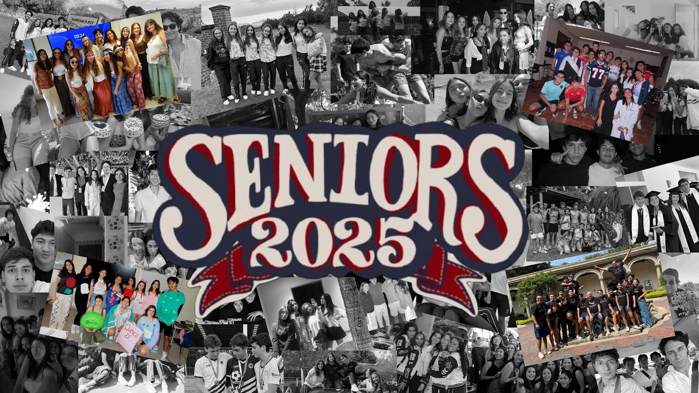
SENIORS 2025
El video oficial de la generación 2025 del colegio Marymount. Dirigido, grabado y editado por estudiantes de la misma generación.
El video
Haz clic para reproducir
Con más de 5 años de experiencia en edición de video profesional, en esta edición buscamos que el espectador realmente se adentre en lo que fue la generación 2025 del colegio Marymount.
El video fue totalmente dirigido, grabado y editado por estudiantes de la misma generación — una mirada desde adentro, hecha con el cuidado de quien vivió cada momento.
Detrás de cámara
El equipo de esta producción
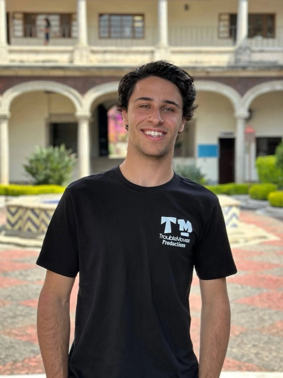
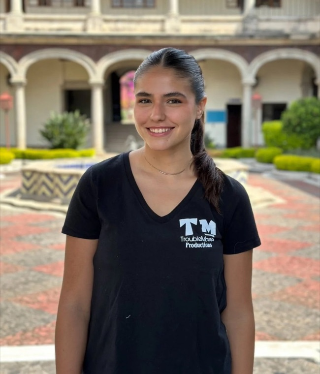
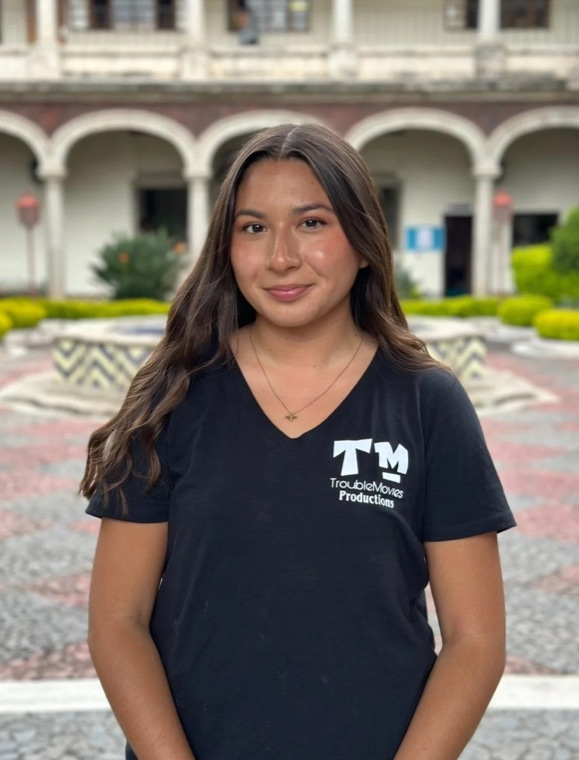
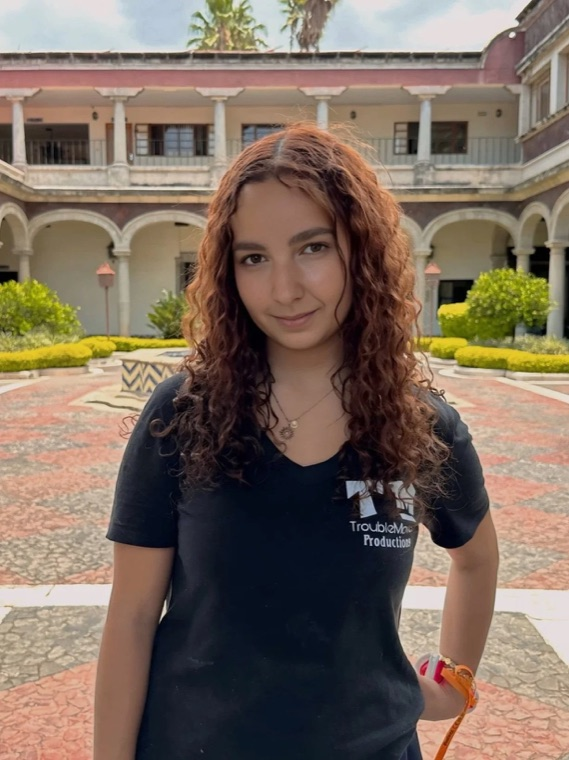
Galería
Momentos de la generación
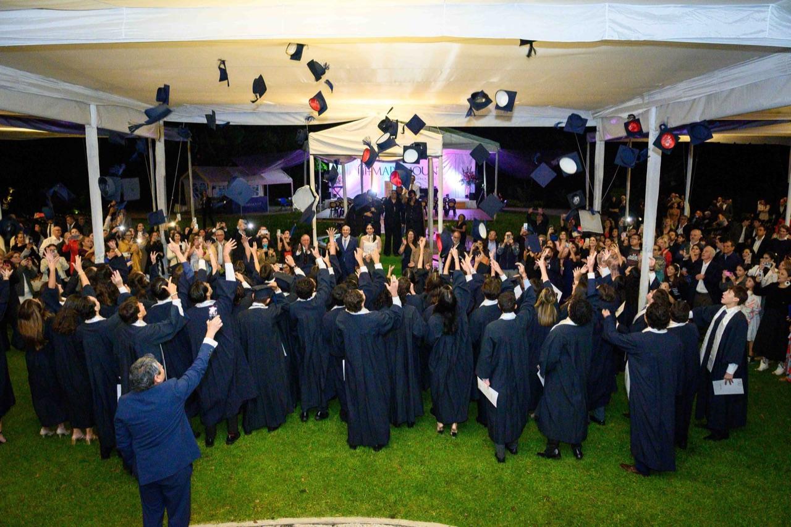
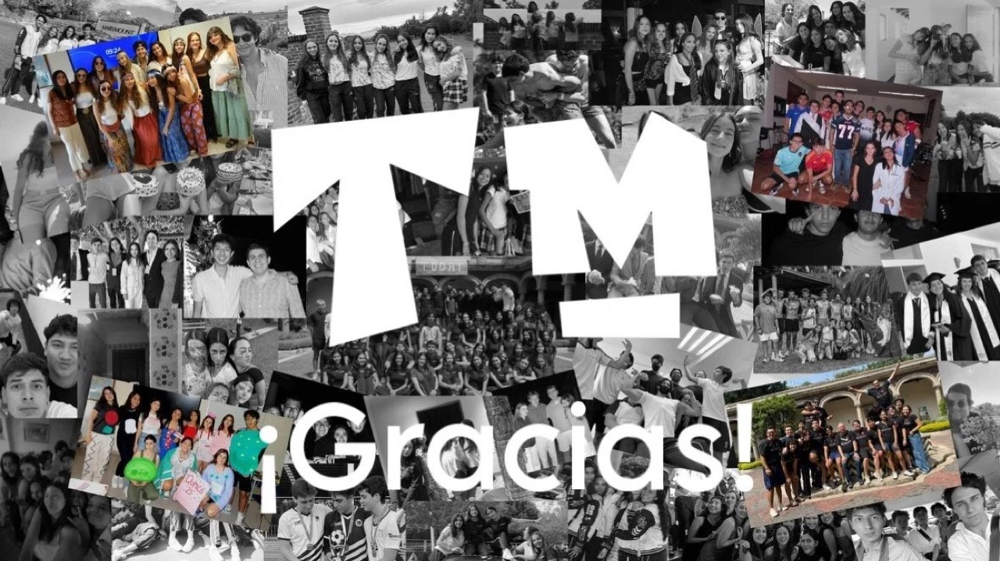
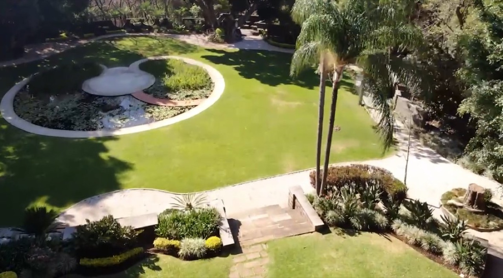
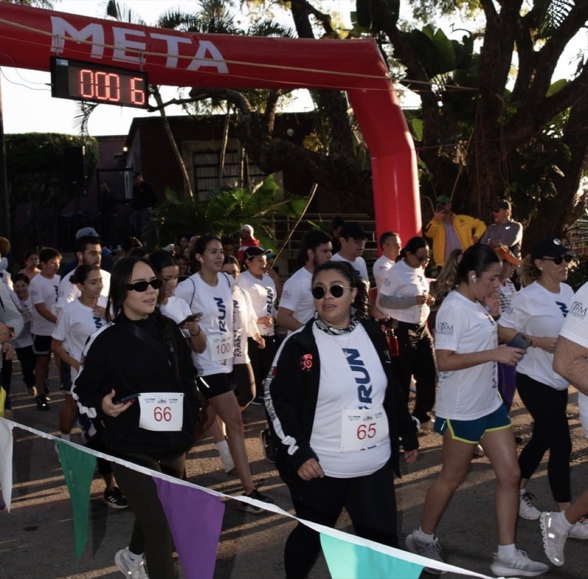
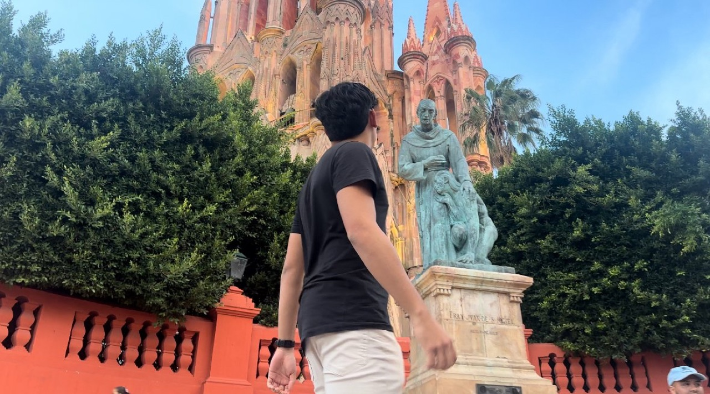
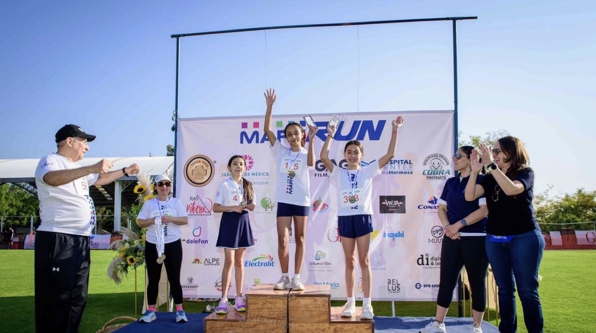
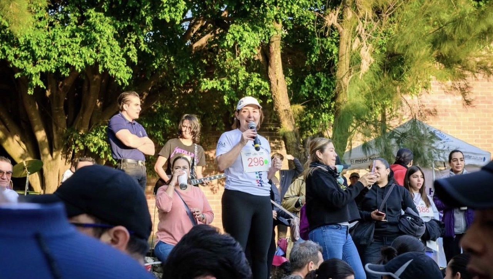
Un regalo para nuestra comunidad
Este proyecto no generó ninguna ganancia económica. Fue creado con y por amor, entrega y muchísima ilusión de crear un recuerdo eterno a nuestra comunidad.
Es nuestro regalo para quienes caminaron a nuestro lado: nuestra generación, nuestro colegio y nuestra comunidad.
Material adicional
Más para ver y guardar
Agradecemos a todas las personas que, de manera puntual, brindaron su apoyo en distintas etapas de este proyecto. Su colaboración fue valiosa y contribuyó significativamente a su realización:
Todas las personas participantes en este video lo hicieron de manera voluntaria y dieron su consentimiento informado al ser grabadas, aceptando los términos y condiciones de TroubleMovies Productions®.
Todo el material audiovisual, sonoro y gráfico presente es propiedad intelectual de TroubleMovies Productions® o se utilizó con las licencias correspondientes. Se prohíbe su reproducción, distribución o uso no autorizado.
Esta obra fue realizada con fines artísticos, educativos y conmemorativos, sin ánimo de lucro. Cualquier semejanza con situaciones ajenas a esta producción es pura coincidencia.
TroubleMovies Productions® agradece el compromiso, entusiasmo y respeto de todas las personas que hicieron posible este proyecto.